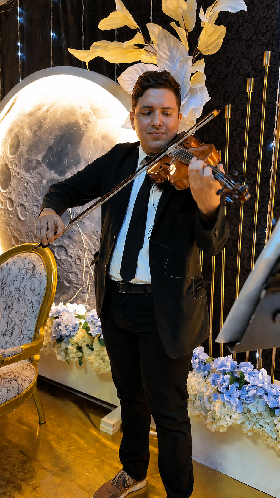
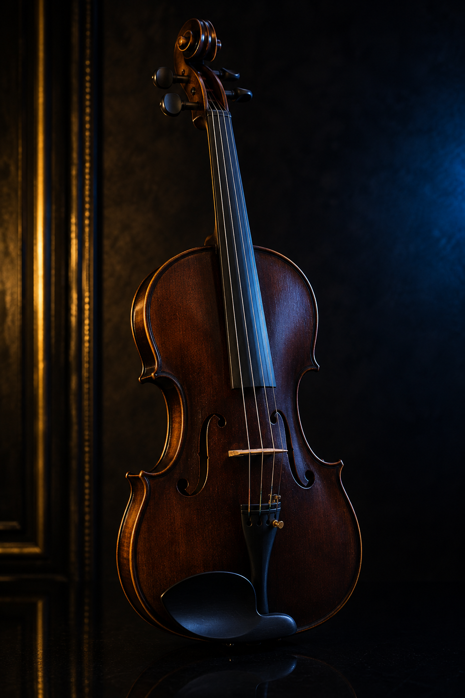
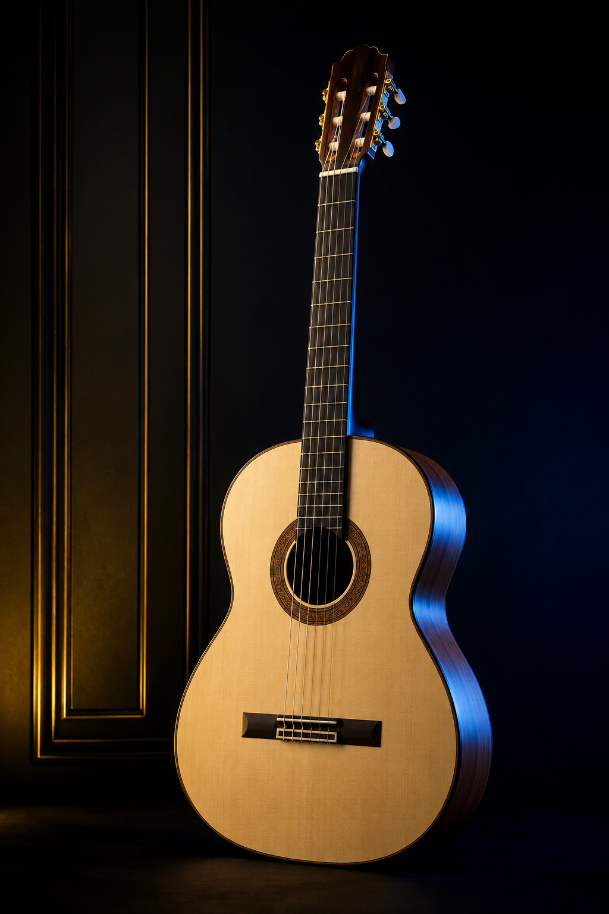
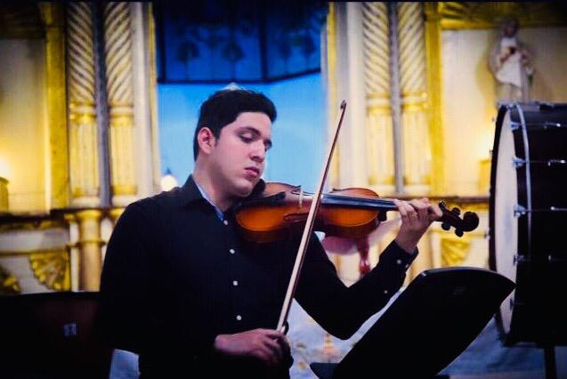

01
Violín
Principiante · Intermedio
Desarrolla tu técnica, lectura musical, repertorio y musicalidad paso a paso.
QUIERO INFORMACIÓN →PROFESOR DE MÚSICA · VIOLINISTA
Aprende música de manera personalizada, práctica y progresiva. Clases de violín, viola, piano, guitarra y técnica vocal, presenciales en Cúcuta y su área metropolitana o desde cualquier lugar mediante clases virtuales.
Violín · Viola · Piano · Guitarra · Técnica Vocal

LO QUE PUEDES APRENDER
Aprende a tu ritmo. Evoluciona con propósito.
Principiante · Intermedio
Desarrolla tu técnica, lectura musical, repertorio y musicalidad paso a paso.
QUIERO INFORMACIÓN →
02Principiante · Intermedio
Aprende técnica, lectura y repertorio desarrollando una sólida musicalidad.
QUIERO INFORMACIÓN →Principiante · Intermedio
Inicia o fortalece tus conocimientos de interpretación y lectura musical.
QUIERO INFORMACIÓN →
04Iniciación
Comienza desde cero y aprende tus primeros acordes y canciones.
QUIERO INFORMACIÓN →Iniciación
Descubre tu voz y desarrolla herramientas básicas para cantar con mayor seguridad.
QUIERO INFORMACIÓN →SOBRE MÍ

PROFESOR DE MÚSICA · VIOLINISTA
Soy Juan Fernando Rojas Ibarra, músico violinista y profesor de música, con formación en el programa de Música de la Universidad de Pamplona.
Actualmente curso noveno semestre y mi formación me ha permitido desarrollar una visión integral de la interpretación, la enseñanza y el trabajo musical en conjunto.
Mi experiencia docente está vinculada a la formación de niños, jóvenes y adultos, buscando que cada estudiante avance de manera progresiva, práctica y personalizada.
QUIERO APRENDERMI TRAYECTORIA
Programa de Música
Noveno semestreExperiencia en la enseñanza de violín, viola, piano, guitarra, técnica vocal y teoría musical, adaptando el proceso de aprendizaje a las necesidades, objetivos y nivel de cada estudiante.
Desarrollo de procesos formativos individuales y grupales, fortaleciendo la técnica, la lectura musical, el repertorio, la musicalidad y el trabajo en conjunto.
Trayectoria como intérprete de violín en escenarios musicales, procesos orquestales, agrupaciones de cámara y ensambles.
Experiencia en preparación de repertorio, ensamble, lectura musical, interpretación y adaptación a diferentes formatos.
Orquesta de Arcos de la Universidad de Pamplona, Orquesta Sinfónica del Sistema Pedagógico Orquestal, agrupaciones de cámara y cuartetos.
Primer y Segundo Festival de Arcos del Oriente, además de actividades académicas, conciertos y procesos de formación musical.
LO QUE APRENDERÁS CONMIGO
Desarrolla una técnica sólida y consciente para tocar con mayor seguridad, control y expresividad.
Aprende a leer e interpretar partituras de manera progresiva, fortaleciendo tu comprensión musical.
Trabaja obras y canciones seleccionadas de acuerdo con tu nivel, intereses y objetivos musicales.
Desarrolla afinación, ritmo, expresión, fraseo y escucha para convertir las notas en verdadera música.
Aprende a escuchar y trabajar con otros músicos, desarrollando las habilidades necesarias para tocar en conjunto.
Avanza a tu propio ritmo mediante objetivos claros y un proceso adaptado a tus necesidades y nivel musical.
¿Listo para comenzar tu proceso musical?
QUIERO APRENDER¿LISTO PARA COMENZAR?
Pasión por la música. Disciplina para aprender. Transformación para crecer.
Clases presenciales en Cúcuta y área metropolitana, además de modalidad virtual.
Escríbeme y recibe información sobre horarios, modalidades y clases.
HABLAR POR WHATSAPP SEGUIR EN INSTAGRAM